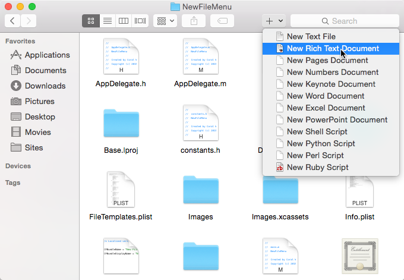

To create a new file with New File Menu is very simple:
You can also access New File Menu from the Finder toolbar (you may need to customize the Finder toolbar first):

Configure File Templates
Finder Context Menu Extension